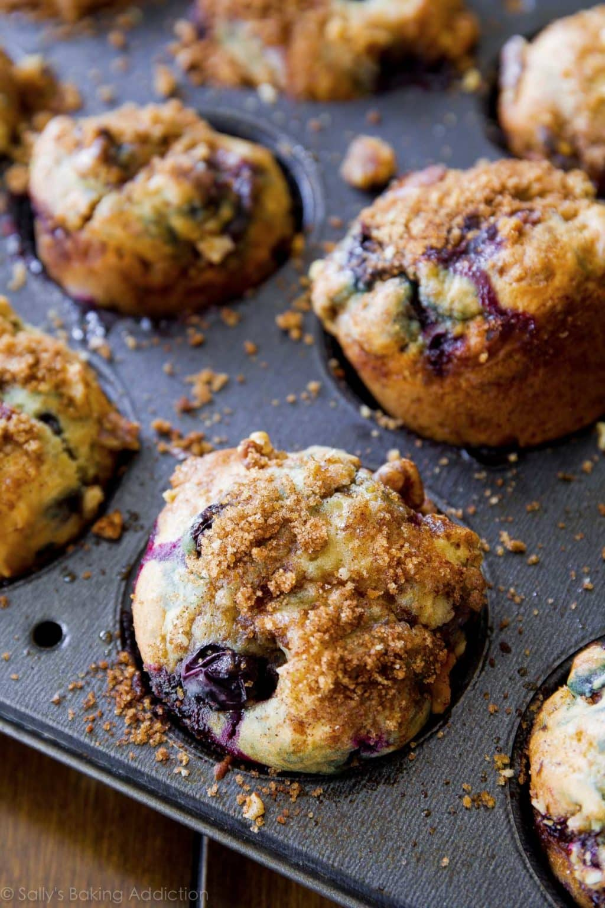

The Best Blueberry Muffins

What's better than a blueberry muffin
to start(or end)your day? I've always
loved the blueberry muffins from Panera
but after tweaking this recipe a bit,
these are pretty dang close(if not better).
They are so moist and have a deliciouse
crumbly streussel on top. Hope you enjoy!
Ingredients
This recipe makes 12 muffins
- 1/2 cup melted butter
- 1 cup sugar
- 2 eggs
- 1/2 TBS vanilla extract
- 1/3 cup sour cream
- 1/3 cup milk
- 2 cups all-purpose flour
- 1 1/2 tspn baking power
- 1/4 tspn salt
- 2 cups blueberries
Instructions
- Mix butter and sugar
- Add in one egg and then add vanilla,
sour cream, and milk. Mix again, Set
aside.
- Gently fold the dry batter into the wet m batter
- Fold in blueberries and scoop mixture into baking pan
- Bake for 25-30 minutes at 400